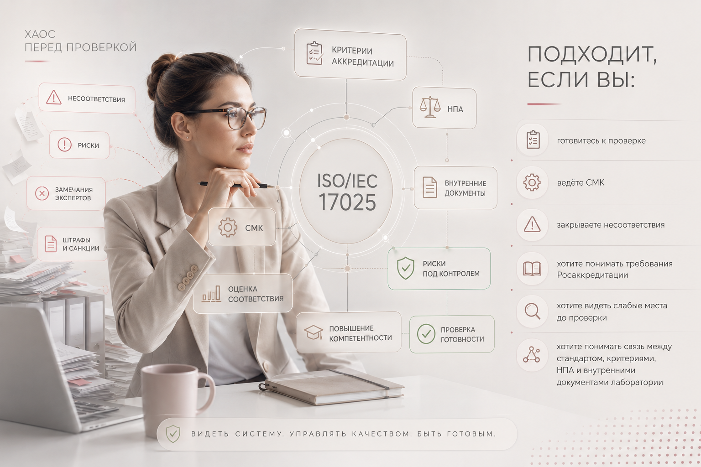

Подготовка к ПК, ВКС и выездной оценке
Понятный план подготовки, слабые места и доказательства, которые нужно показать.
Платный канал для аккредитованных лабораторий
Полезные материалы, профессиональные разборы и консультации по ГОСТ ISO/IEC 17025, критериям аккредитации, документам Росаккредитации, НПА в сфере аккредитации, ФЗ-412, СМК, несоответствиям и подготовке к проверкам.
Для аккредитованных лабораторий, которым нужно не просто «вести документы», а понимать требования, проходить проверки, закрывать несоответствия и уверенно подтверждать компетентность.
Разборы · консультации · чек-листы · подготовка к ПК · помощь с несоответствиями
Аккредитованная лаборатория ежедневно работает не только со стандартом, но и с критериями аккредитации, документами Росаккредитации, НПА, областью аккредитации, записями, оборудованием, персоналом и доказательствами компетентности.
Понятный план подготовки, слабые места и доказательства, которые нужно показать.
Логика несоответствий, формулировки, доказательства устранения и снижение риска приостановки.
Как читать и применять требования без паники и домыслов.
Связь законодательства с практикой лаборатории и документами СМК.
Система, которая работает на аккредитацию, а не только «для проверки».
Оформление области, реестры и подтверждающие документы.
Что показать, как аргументировать и как не потерять позицию при проверке.
Уверенные ответы, записи и понимание требований на практике.
Канал помогает лаборатории заранее разложить требования по действиям, документам и доказательствам, чтобы подготовка к проверке была управляемой, а не авральной.
Оформить подпискуКанал уже наполнен материалами, которые помогают разбирать требования через практику лаборатории: требование → действие → запись → доказательство → проверка.
Аккредитация лаборатории — это не отдельный стандарт, а система взаимосвязанных требований, документов, процессов и доказательств соответствия.
Поэтому в канале разбираются не только требования ГОСТ ISO/IEC 17025-2019, но и критерии аккредитации, документы и политики Росаккредитации, ФЗ-412, НПА в сфере аккредитации, область аккредитации, подтверждение компетентности, проверки, ВКС, работа с экспертной группой, СМК, записи, риски, несоответствия, корректирующие действия и спорные вопросы применения требований.
Главная задача канала — помочь лаборатории видеть не отдельные пункты требований, а всю систему подтверждения компетентности целиком.
Главный результат — лаборатория начинает видеть аккредитацию как систему требований, доказательств и управляемых процессов.
Фрагменты сообщений от специалистов лабораторий после применения материалов канала в реальных рабочих ситуациях: подготовка к ПК, прохождение оценки, работа с документами, аудитами и несоответствиями. Персональные данные и названия организаций скрыты.
Такая обратная связь важна не как формальная «похвала», а как подтверждение того, что материалы канала применяются лабораториями в реальных ситуациях — при подготовке к проверкам, анализе требований, оформлении документов и устранении несоответствий.
Приватный канал подходит лабораториям, которым важно не разово получить ответ на один вопрос, а системно понимать требования, готовиться к проверкам, видеть слабые места и работать с доказательствами соответствия.
Канал даёт системную профессиональную опору для ежедневной работы лаборатории. Индивидуальный разбор нужен там, где вопрос уже требует анализа конкретных документов, записей и обстоятельств.
Подписка открывает доступ к закрытому профессиональному каналу с регулярными разборами, практическими материалами и пояснениями по аккредитации лабораторий.

Если сомневаетесь, подойдёт ли канал вашей лаборатории, можно написать мне и уточнить.
Это платный профессиональный канал с регулярными разборами, материалами и пояснениями. Индивидуальные консультации обсуждаются отдельно.
Нет. Канал шире. В нём разбираются ГОСТ ISO/IEC 17025, критерии аккредитации, документы Росаккредитации, НПА в сфере аккредитации, ФЗ-412, подзаконные акты, ПК, ВКС, несоответствия, область аккредитации, СМК и реальные ситуации лабораторий.
Да. Отдельное внимание уделяется критериям аккредитации, документам Росаккредитации, НПА в сфере аккредитации и тому, как эти требования применяются лабораторией на практике.
Да, канал особенно полезен тем, кто готовится к ПК, ВКС или выездной оценке и хочет заранее увидеть слабые места.
Канал помогает понять логику несоответствий, подходы к анализу причин, корректирующим действиям и оформлению доказательств. Конкретные ситуации можно разбирать в рамках личной консультации.
Да. Аккредитация — это не разовое событие. Лаборатория постоянно подтверждает компетентность через записи, внутренние аудиты, ПК, управление рисками, оборудование, персонал, корректирующие действия, выполнение критериев аккредитации и требований НПА.
Да. Если у лаборатории срочная ситуация, получены несоответствия, предстоит ПК или нужен аудит СМК, можно написать напрямую и обсудить формат помощи.
Нет. Канал полезен руководителям лабораторий, специалистам СМК, техническим специалистам и всем, кто участвует в подтверждении компетентности лаборатории.
В канале могут быть шпаргалки, чек-листы, примеры формулировок и практические материалы, но основной смысл канала — не просто дать форму, а объяснить, как требование работает.
Платный канал даёт более системные и практические разборы, ориентированные на реальные ситуации лабораторий, проверки, несоответствия, документы и доказательства соответствия.
Если хотите получить доступ к приватному каналу, уточнить формат участия или задать вопрос перед подпиской — напишите мне удобным способом.
В канале я помогаю разбираться в ГОСТ ISO/IEC 17025, критериях аккредитации, документах Росаккредитации, НПА, ФЗ-412, несоответствиях и реальных ситуациях проверок.
Лучше разобраться до проверки, чем срочно искать решение после акта экспертизы.